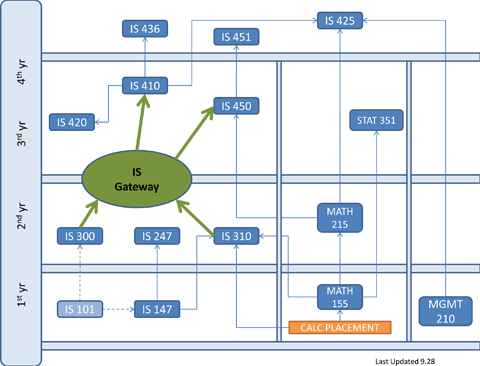

Bachelor of Science in Information Systems
he BS program prepares students for all potential career positions in the IS field. These include: Systems Analysis and Design, Computer Networking and Health Care Informatics.
For successful completion of the degree, all students must satisfy the general education requirements that are explained in the UMBC Undergraduate Catalog.
The required program courses for the Bachelor of Science Degree are below. Course descriptions can be found in the Course Catalog.

About UMBC | Contact Us | Equal Opportunity | Community:
© University of Maryland, Baltimore County • 1000 Hilltop Circle • Baltimore, MD 21250
|